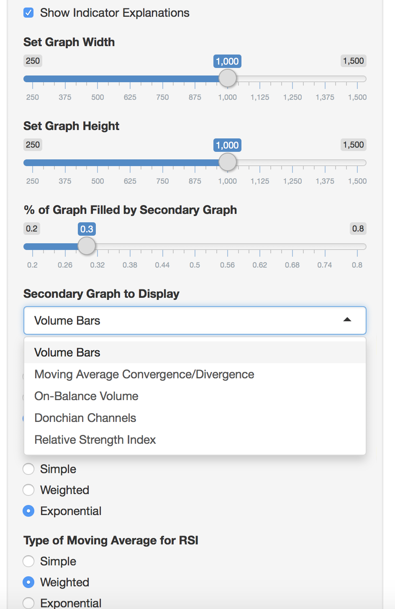
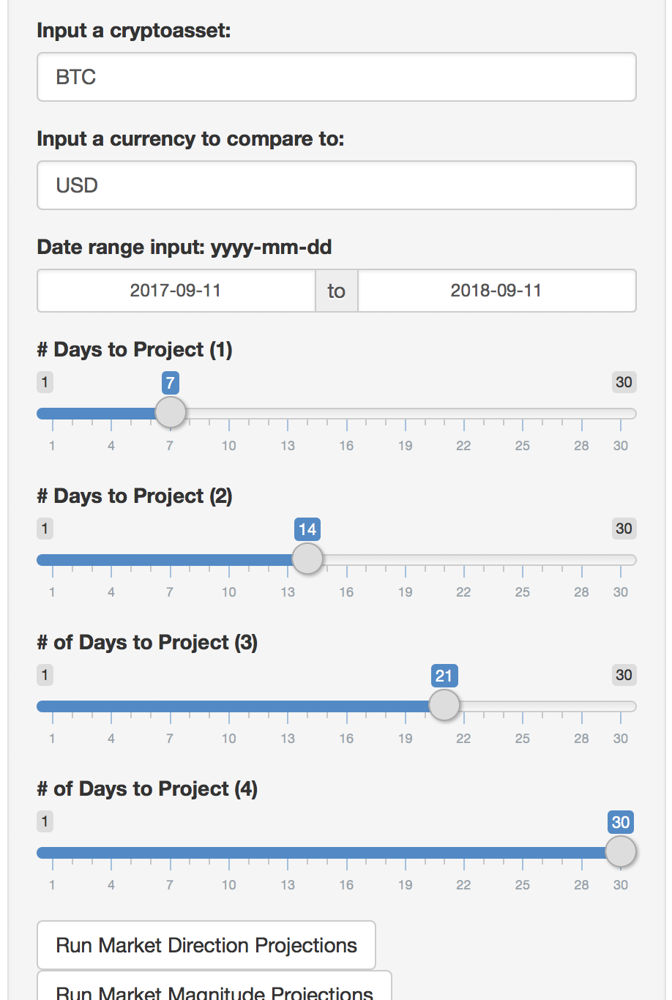
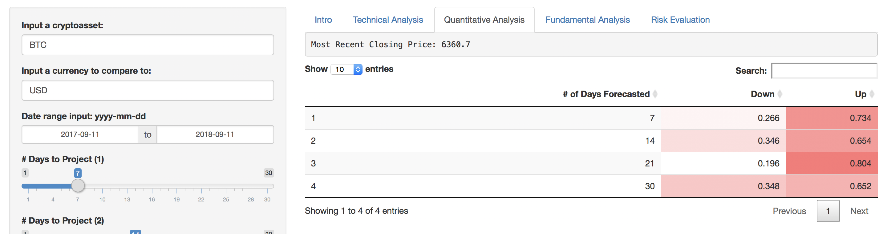
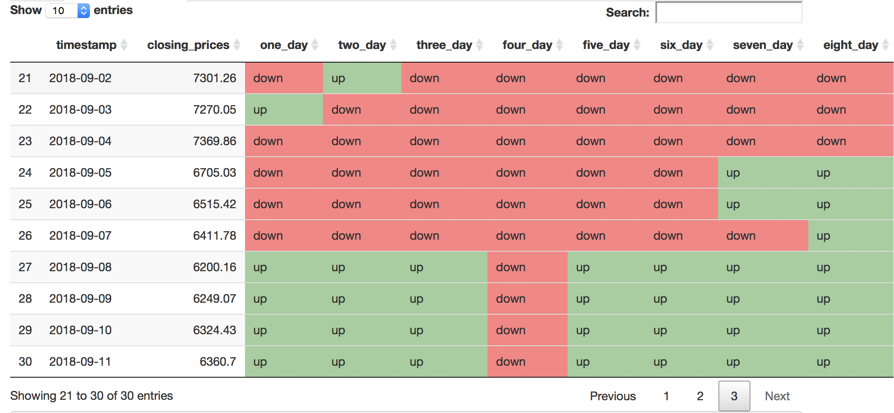
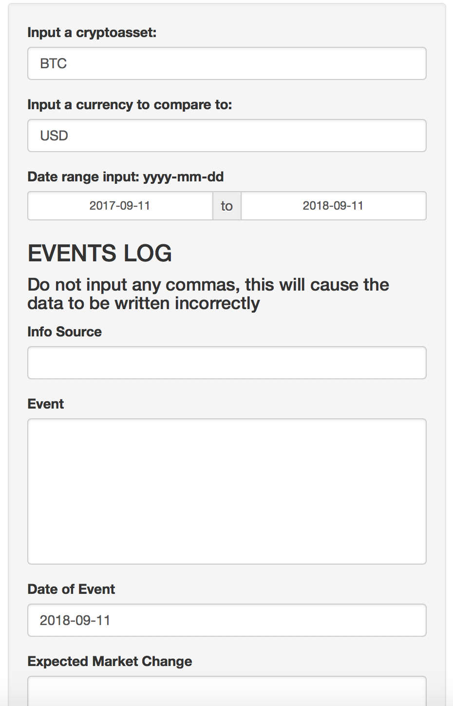
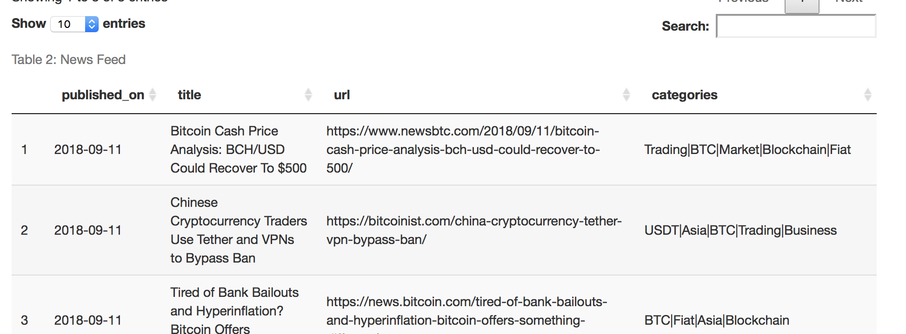
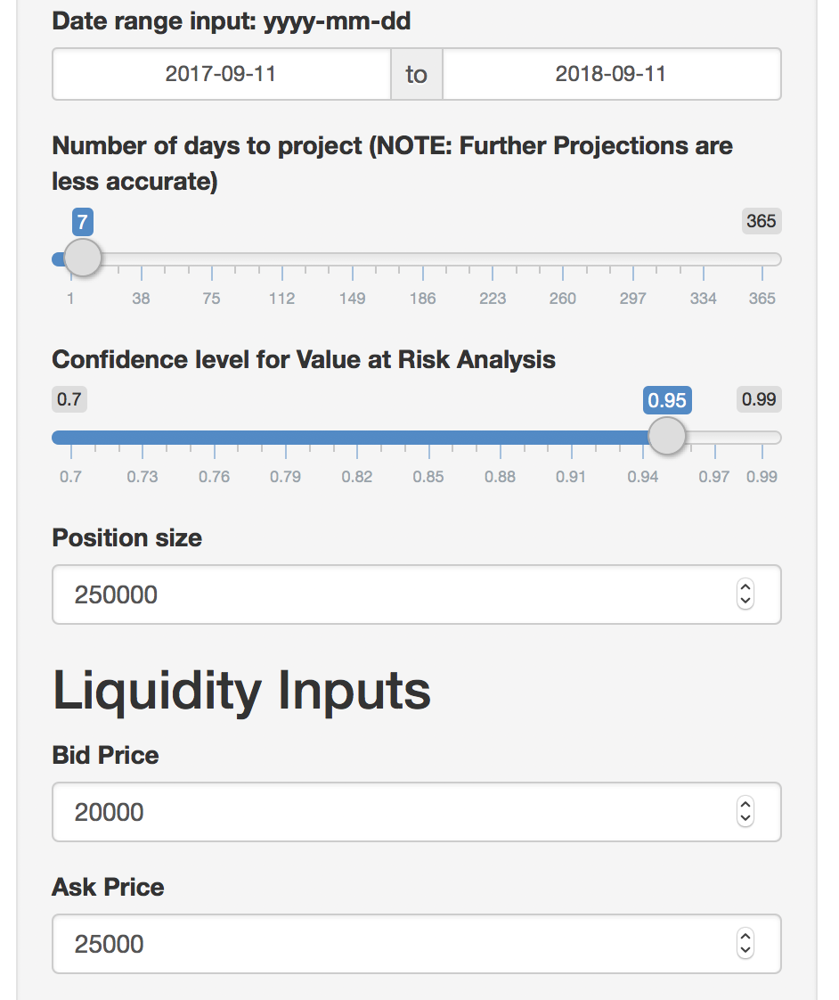
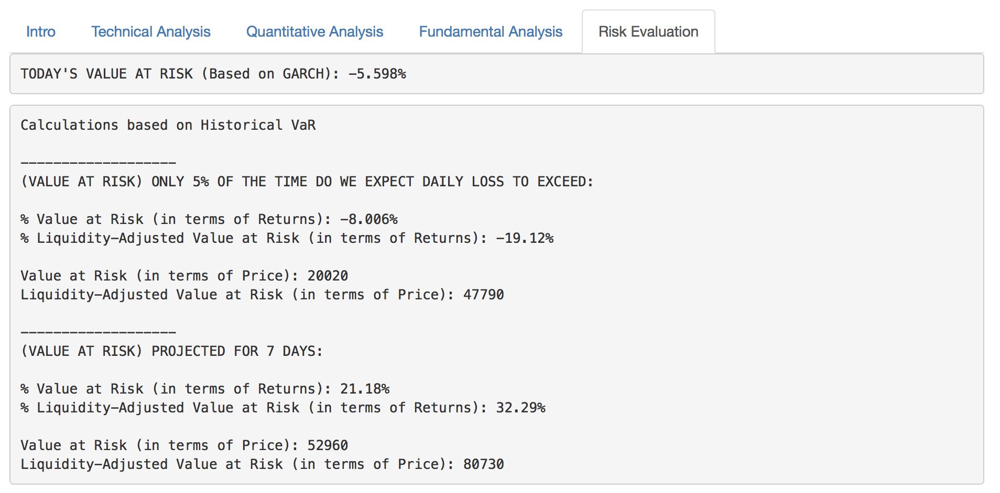
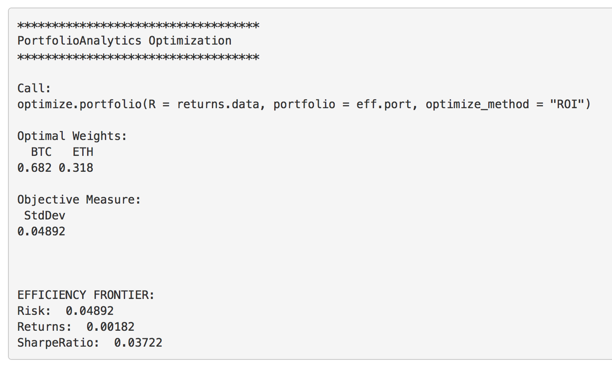
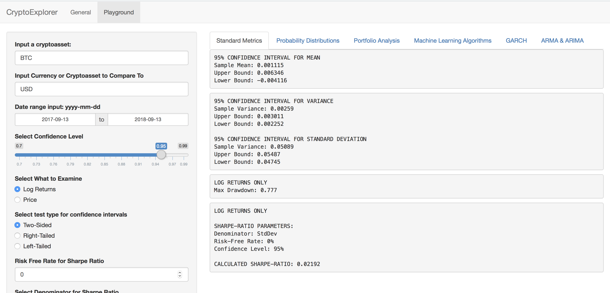

SOLUTION
I created a software application called the “Crypto Explorer” using R, Shiny, and the CryptoCompare API. It supports every crypto asset and crypto comparison on Crypto Compare, and has two sections: the General section and the Playground section.
General Section
Playground Section
The General section was designed for the business person. It shows visuals and simplified outputs that are immediately relevant to financial decisions.
The Playground section was designed for the researcher. It provides granular inputs and a wide variety of modular mathematical methods and backtesting.
Both sections are completely interactive, allowing any user to quickly and easily experiment as desired. For this case study, I will focus more on the General Section.
General Section
Technical Analysis
Example Technical Analysis Input (Partial View)
Example Technical Analysis Output (Partial View)

The biggest key consideration for the Technical Analysis was that users at Wachsman tend to have little to no experience in trading. Technical indicators are one of the most common tools in trading. In order to effectively communicate this without expecting people to research trading independently, I decided to focus on a few common technical indicators such as Relative Strength Index (RSI) and Moving Average Convergence/Divergence (MACD). Furthermore, I provided helper functions, such as toggling indicator explanations and making all graphs interactive.
In Technical Analysis, it is usually better to work with a few indicators and refine them from there. By limiting the subset of indicators and providing an easy input menu to set parameters, users at Wachsman could avoid being overwhelmed by choices that they do not have time to parse through. Additionally, for the most part, the indicators selected are fairly easy to read. This further increases the accessibilty of the application. However, the indicator types are diverse. For example, not every indicator is a momentum indicator. Thus, a reasonable analysis can still be conducted through corroboration. I also operated on the assumption that other traders use these indicators frequently because of how easy they are to read, resulting in self-fulfilling situations.
Now, Technical Analysis is not perfect nor always reliable. But, it can be iterated using the input menu. For example, should the parameters for a buy signal in crypto assets be the same as in a traditional stock? This can now be explored.
Quantitative Analysis
Example Quantitative Analysis Input (Partial View)
Example Quantitative Analysis Output (Partial View)
The Quantiative Analysis section does not match Quantitative Analysis in a traditional sense. Because of the decentralized nature of crypto assets, the market lacks public financial statements or sales revenue. Rather in this section, I have built in a quantitative decision model algorithm developed from the Playground section of the Crypto Explorer. Once again it is important to consider that users will not necessarily have a statistical or computer science background to understand the underlying process. As a result, the inputs are condensed to just what a user can understand -- projecting days out. The output is also simplified down to a heat map describing the algorithm's predicted probability distribution.
However, predictive algorithms are not always reliable, especially in a market so volatile. During the development of this application, one issue that began to arise was that users were treating the Quantitative Analysis independently of the Technical Analysis rather than together. Furthermore, users weighed the Quantitative Analysis higher because they felt it was more advanced and because of the convenience of just receiving a definitive answer.
To respond to this, I added what I call a "Lagging Predictions" indicator, which is a binary map of up and down projections for multiple different timestamps.
Example Lagging Predictions Output

This way, projections could be viewed in a contextual and visual way -- similar to a technical indicator -- rather than in a definitive way. The map also makes it clear that the Quantitative Analysis is not entirely reliable because predictions have conflicts.
To further encourage the synergy between Quantitative Analysis and Technical Analysis, I made the Lagging Predictions available on the "Technical Analysis" page so that both Quantiative Analysis and Technical Analysis could be present in one place.
Fundamental Analysis
Example Fundamental Analysis Input (Partial View)
Example Fundamental Analysis Output (Partial View)

Out of all the primary analyses, Fundamental Analysis is, by definition, the most subjective. However, if done properly, it can fill in the gaps that Quantitative and Technical Analysis present (e.x. news events). Because of the subjective nature of Fundamental Analysis, it is not something that can be programmed. Additionally, Fundamental Analysis can take a very long time to perform -- time which Wachsman does not have.
I instead decided to focus on providing a support tool for users at Wachsman to iterate their ability to do Fundamental Analysis more efficiently. Key to this is the fact that Wachsman is a leading agency in the blockchain industry that works with dozens of clients constantly (and reject even more potential clients!). Thus, users at Wachsman have a much higher ability to properly value blockchain products quickly and are constantly immersed in the news and industry landscape.
I decided to set up an Events Log -- pictured above -- as a lightweight framework for backtesting fundamental analysis. The idea is that as events come up, users can input what they think will happen and later check their assumptions. Over time, users can better discern what events actually make a significant difference for crpyto assets, and perhaps even see patterns. Additionally, this log is shared by everyone -- thus creating a cumulative, centralized source of backtesting fundamental analyses.
Adding to the Events Log is fast and users can be as comprehensive in their explanations as they want. At minimum, the log simply asks for the date of the event, the source, the actual event, the expected market change, a short rationale, and name. I included name as a required field to encourage collaboration and conversation between employees at Wachsman. For example, if I disagree with someone's analysis and want to know more, then I know who to reach out to.
Finally, I also included a news feed that users can search through and filter to make the Fundamental Analysis tab a one-stop shop.
Example News Feed Output
Risk Evaluation
Example Risk Evaluation Input (Partial View)
Example Risk Evaluation Output (Partial View)
The last part of the General Section is the Risk Evaluation tab. I decided to focus on two risk measurement and response practices: Value at Risk (pictured above) and Portfolio Analysis. I used Value at Risk as it is a common and effective practice in finance that most business people can understand. Likewise, it is easier to negotiate with potential clients using a metric that is generally understood and accepted, even if it might be flawed for crypto assets. Many clients request doing full or partial payments in tokens. In such a volatile market, it is critical to price such tokens properly. In the Crypto Explorer, daily Value at Risk is measured using GARCH (generalized autoregressive conditional heteroskedasticity), which was tested in the Playground section. Longer-term Value at Risk is measured in a more traditional way, using Historical Value at Risk.
To this end, I also allowed for parameters to be set for liquidity adjustment -- position size, bid price, ask price -- so that whoever handles new business can simulate the outcomes of different negotiations quickly.
The Portfolio Analysis optimized for minimal variance (i.e. risk) for any combination of crypto assets based on historical data. Users could also set additionally parameters, such as weight constraints and box constraints, to further iterate how Wachsman (or any user) balances their portfolio.
Example Portfolio Analysis (Partial View)
Playground Section
The Playground Section is named as such because it is a place to "play around" with crypto assets in a much more comprehensive manner than the General Section. This is where the models for Quantitative Analysis and Risk Evaluation (from the General Section) are put to the test, along with many other insights that are useful for financial purposes. Below are the features of the Playground Section!
Standard Metrics
Probability Distributions
Portfolio Analysis
Machine Learning Algorithms
GARCH
ARMA & ARIMA